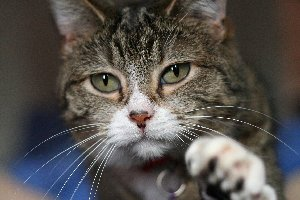
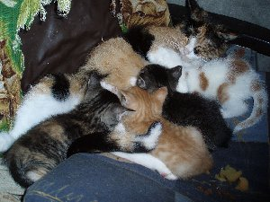

De kat of huiskat (Felis silvestris catus) is een van de oudste huisdieren van de mens. De gedomesticeerde kat behoort tot de familie der katachtigen (Felidae). Ook het woord poes is gangbaar, soms meer specifiek in het geval van een vrouwelijke kat. Een mannelijke kat is een kater, en een jong katje een kitten. Eind 2009 waren in Nederland ongeveer 3,6 miljoen katten aanwezig.
De wetenschappelijke naam van de kat werd in 1758 als Felis catus gepubliceerd door Carl Linnaeus in de tiende druk van Systema naturae. De naam van de wilde kat, waarvan de gedomesticeerde kat afstamt, werd in 1777 door Johann Christian von Schreber gepubliceerd als Felis silvestris. Van veruit de meeste dieren die gedomesticeerd zijn, is de wetenschappelijke naam afgeleid van de naam van de in het wild levende voorouders. In 2003 stelde de International Commission on Zoological Nomenclature in Opinion 2027 vast dat dit principe voor alle gedomesticeerde soorten gevolgd moet worden, en dat de naam van de wilde soort prioriteit heeft over die van de gedomesticeerde vorm, ook als die laatste eerder is gepubliceerd. Als de gedomesticeerde kat wordt beschouwd als een ondersoort van de wilde kat, dan is de correcte naam voor de soort Felis silvestris, en het trinomen voor de ondersoort Felis silvestris catus.
De levensduur van huiskatten komt ongeveer overeen met die van de andere katachtigen. Na tien jaar kan een kat als bejaard worden beschouwd. Katten sterven gemiddeld na veertien tot zestien jaar. De oudste Nederlandse kat werd 28 jaar oud. De oudste kat ter wereld werd 38 jaar en 1 dag oud. In het algemeen zijn leeftijden moeilijk te controleren, omdat katten geen geboortebewijs hebben. Raskatten hebben dit wel, maar worden gemiddeld minder oud, ongeveer 10-13 jaar. Dit komt door aangeboren ziekten die bij raskatten vaker voorkomen ten gevolge van een hoge inteeltcoëfficiënt. Een soortgelijk beeld ziet men overigens ook bij rashonden.
Een jong katje heet een kitten. Ongeveer 66% van de kittens komt ter wereld met de kop eerst. Bij de geboorte is een kitten doof en blind. Na ongeveer 10 dagen kan een kitten zien en na 17 dagen werkt het gehoor. Na vier tot vijf weken gaat een kitten over op vast voedsel.
In streken van Europa en Amerika bestaat het volksgeloof dat het ongeluk over je afroept, wanneer een zwarte kat je pad kruist en van je wegloopt. Als de kat naar je toeloopt brengt het dus juist geluk. In Engeland brengt een zwarte kat geluk en een witte kat ongeluk. In China is een zwarte kat ook een teken van ongeluk. Daar wordt de zwarte kat echter beschouwd als een waarschuwing, zodat men daarna extra goed op zijn hoede kan zijn.